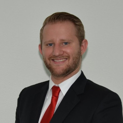

Use this link: Take me there!
Send the following text to np-chair@esn-germany.de:
"I, [Name of the section president/local representative], president of ESN [Name of the section], delegate our vote for each and every vote that will occur during the National Assembly "oN Air Vol. 3" from the 13th-14th of February, 2021, to [Name of the delegate], [Member's position], [Member's Email Address] of ESN [Name of the Section]."Use this template and hand in your SOS proposal by sending it via email to the CT (np-chair@esn-germany.de) and the NB (board@esn-germany.de).
 WhatsApp spam group:
Take me there!
WhatsApp spam group:
Take me there!
 onAirSlack:
Take me there!
onAirSlack:
Take me there!
Main Chair
Hi, I'm Theo and I will (hopefully) be your Main Chair. I currently work for the International Office at a "Fachhochschule" in Switzerland and I've been in ESN since 2013 and have been active on the local (ESN FHNW), national (ESN Switzerland) and international level. Since this is actually the first statutory event that I'm chairing I hope this means I'll be able to perfectly mix experience with the motivation and freshness of a newbie! I'm a huge Star Wars and Liverpool FC fan and love playing DSA (Das Schwarze Auge) in my free time! Feel free to approach me in English, German or Swiss German about any concern or if you just want to chit-chat. See you soon!
Vice Chair
Hello there, my name is Božo and I will be the Vice-Chair (still hopefully) of the upcoming and potentially last online NA. I have been speedrunning my ESN experience and despite already being active on the international level, I have yet to formally hold a position on the national level for a whole mandate. Same as with my wonderful CT boss, this is the first time I am chairing an ESN event so be gentle. Ok, that’s a lie instead do hit us (in Joker's voice ) with your NA suggestions as we want to make it the best there ever was.